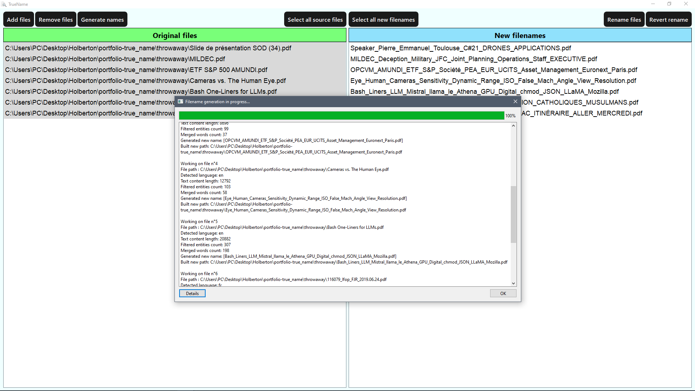
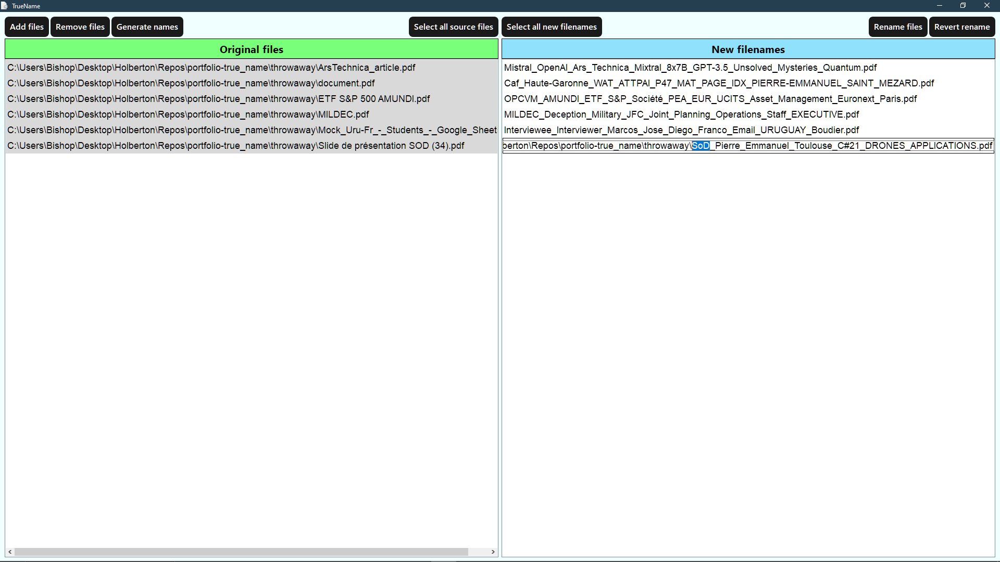

A lightweight, AI-powered file renaming tool.
TrueName leverages Python’s extensive array of libraries to extract text from documents and analyze it using NLP. It generates meaningful filenames for easy identification of their content.

